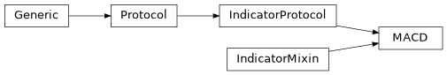
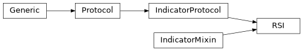
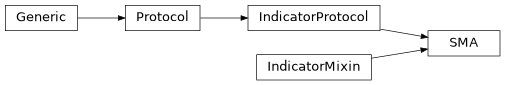

indicative.indicators#
Submodules#
Classes#
Computes the Average Directional Index (ADX). |
|
Bollinger Bands (BBANDS) indicator. |
|
Exponential Moving Average (EMA). |
|
Moving Average Convergence Divergence (MACD). |
|
Computes the Relative Strength Index (RSI) for a given set of price data. |
|
Simple Moving Average (SMA) indicator. |
|
Stochastic Oscillator (STOCH) |
Package Contents#
- class indicative.indicators.ADX[source]#
Bases:
indicative.protocols.IndicatorProtocol,indicative.mixins.IndicatorMixinComputes the Average Directional Index (ADX).
The Average Directional Index (ADX) is a technical indicator that measures the strength of a trend. It is based on the difference between the highest and lowest prices over a given period of time. The ADX is calculated as the absolute value of the difference between the highest and lowest prices divided by the sum of the absolute values of the differences between consecutive prices.
- timeperiod#
The number of periods to use for the calculation of the ADX.
- Type:
int
- timeperiod: pydantic.PositiveInt = None#
- compute(high, low, close)[source]#
Computes the Average Directional Index (ADX) for a given set of high, low, and close price data.
- Parameters:
high (Array) – An array of high prices.
low (Array) – An array of low prices.
close (Array) – An array of close prices.
- Returns:
A list of namedtuples containing the computed ADX values.
- Return type:
STOCH_Return
- class indicative.indicators.BBANDS[source]#
Bases:
indicative.protocols.IndicatorProtocol,indicative.mixins.IndicatorMixinBollinger Bands (BBANDS) indicator.
- timeperiod#
The number of periods for the moving average.
- Type:
PositiveInt
- nbdevup#
The number of standard deviations above the moving average.
- Type:
PositiveInt
- nbdevdn#
The number of standard deviations below the moving average.
- Type:
PositiveInt
- timeperiod: pydantic.PositiveInt = None#
- nbdevup: pydantic.PositiveInt = None#
- nbdevdn: pydantic.PositiveInt = None#
- matype: indicative.enums.MA_Type = None#
- class indicative.indicators.EMA[source]#
Bases:
indicative.protocols.IndicatorProtocol,indicative.mixins.IndicatorMixin
Exponential Moving Average (EMA).
The Exponential Moving Average (EMA) is a type of moving average that gives more weight to more recent prices. It is calculated by taking the average price of a security over a specified period of time, with more recent prices given more weight.
- Parameters:
timeperiod (int) – The number of bars to use in the calculation of the EMA. Defaults to 30.
- timeperiod: pydantic.PositiveInt = None#
- class indicative.indicators.MACD[source]#
Bases:
indicative.protocols.IndicatorProtocol,indicative.mixins.IndicatorMixinMoving Average Convergence Divergence (MACD).
The MACD is a widely used indicator that plots the difference between a short-term and long-term moving average of a security’s price. The MACD is calculated by subtracting the long-term moving average from the short-term moving average.
- Parameters:
fast_period (PositiveInt) – The number of bars used to calculate the fast moving average. Defaults to 12.
slow_period (PositiveInt) – The number of bars used to calculate the slow moving average. Defaults to 26.
signal_period (PositiveInt) – The number of bars used to calculate the signal line. Defaults to 9.
- Returns:
- A list of namedtuples containing the MACD, MACD signal and
MACD histogram values.
- Return type:
MACD_Return
- fast_period: pydantic.PositiveInt = None#
- slow_period: pydantic.PositiveInt = None#
- signal_period: pydantic.PositiveInt = None#
- class indicative.indicators.RSI[source]#
Bases:
indicative.protocols.IndicatorProtocol,indicative.mixins.IndicatorMixinComputes the Relative Strength Index (RSI) for a given set of price data.
The Relative Strength Index (RSI) is a technical indicator used to measure the strength of a trend. It is based on the ratio of the average gain of up days to the average loss of down days over a given period of time.
- timeperiod#
The number of periods to use for the calculation of the RSI.
- Type:
int
- timeperiod: pydantic.PositiveInt = None#
- class indicative.indicators.SMA[source]#
Bases:
indicative.protocols.IndicatorProtocol,indicative.mixins.IndicatorMixinSimple Moving Average (SMA) indicator.
- timeperiod#
The number of periods for the moving average. Defaults to 30.
- Type:
PositiveInt
- timeperiod: pydantic.PositiveInt = None#
- class indicative.indicators.STOCH[source]#
Bases:
indicative.protocols.IndicatorProtocol,indicative.mixins.IndicatorMixinStochastic Oscillator (STOCH)
The Stochastic Oscillator is a momentum indicator that compares the closing price of a security to its price range over a given period of time. The indicator is used to identify overbought and oversold conditions in the market.
- fastk_period#
The number of periods used for the fast k line.
- Type:
int
- slowk_period#
The number of periods used for the slow k line.
- Type:
int
- slowd_period#
The number of periods used for the slow d line.
- Type:
int
- fastk_period: pydantic.PositiveInt = None#
- slowk_period: pydantic.PositiveInt = None#
- slowd_period: pydantic.PositiveInt = None#
- slowk_matype: indicative.enums.MA_Type = None#
- slowd_matype: indicative.enums.MA_Type = None#
- compute(high, low, close)[source]#
Compute the Stochastic Oscillator.
- Parameters:
high (Array) – An array of high prices.
low (Array) – An array of low prices.
close (Array) – An array of close prices.
- Returns:
A list of namedtuples containing the computed STOCH values.
- Return type:
STOCH_Return